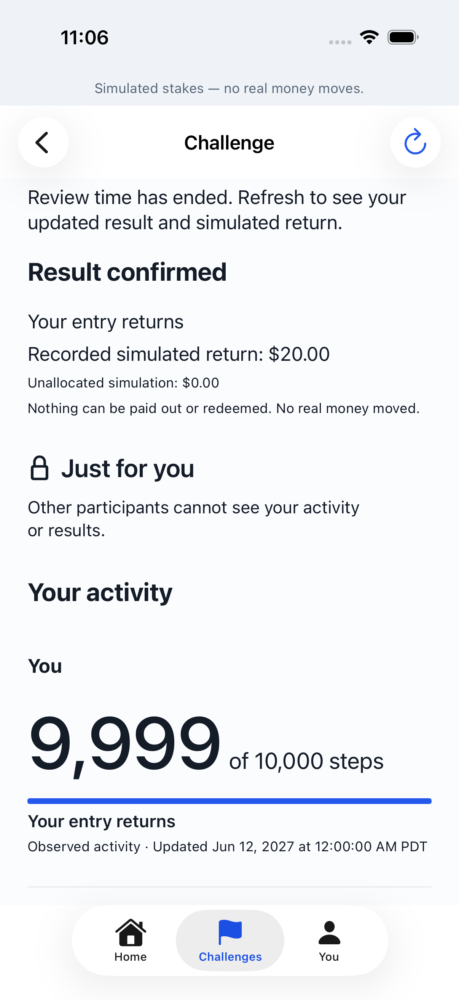
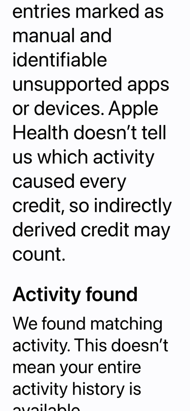
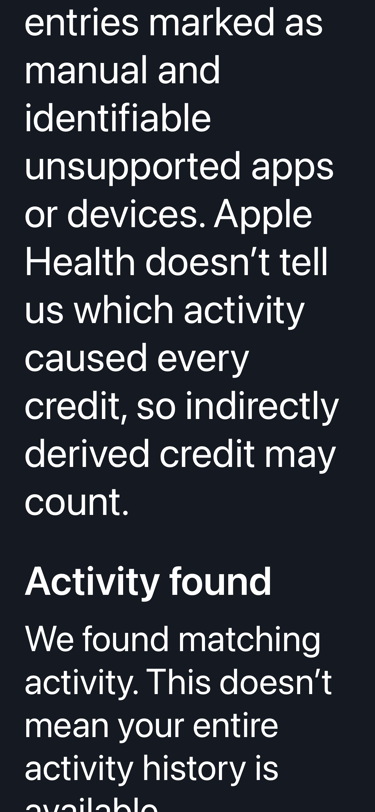
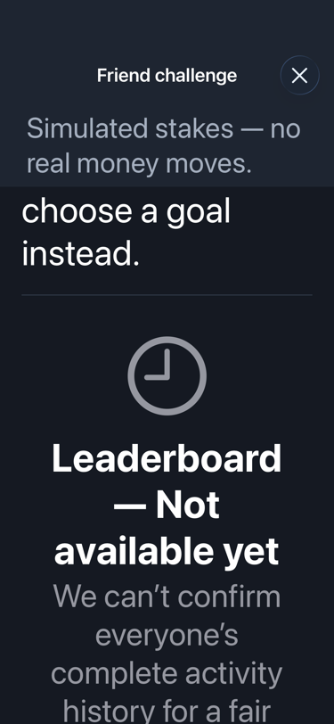

Signal now follows real activity through a corrected result.
Readiness, deliberate consent, automatic updates, corrections, review and simulated history use the ordinary app. Verification uses synthetic Health input and an owned local server.
Local integration, with the release boundary intact. Nine goal policies are supported. Four real leaderboards remain unavailable. The four-metric, all-13-policy release requirement is unchanged; all 18 external readiness entries remain closed.
9goal policies integrated
5signed writers share delivery order
7distinct readiness states
A correction changes the outcome.
The touch-driven Signal test first finds 10,001 steps toward a 10,000-step goal. A later read replaces that value with 9,999. The app saves the update, exposes the actual notice’s review window, and records the returned entry.
These are two verified test observations, not a fabricated daily activity chart. Full product windows were advanced with the injected local source clock.
Actual Simulator capture: final result and recorded simulated return.

The source agreement determines what can count.
New Activity minutes
Apple Exercise credit v2 accepts unknown causal origin as the owner’s disclosed choice. Identifiable manual entries and unsupported sources are excluded; other uncertainty remains unresolved.
Strict Exercise v1 stays unavailable. Old consent, agreement digests and saved request bytes are preserved.
Positive success, honest uncertainty
Positive observations can prove success. Incomplete history cannot prove a miss or complete ranking. Running retains whole boundaries, the inclusive 100–102% distance range, pauses and strict under-target time.
Two friends with one unresolved result void. Six friends with four successes and two unresolved results all recover their own entries.
Readable at large text sizes.
Actual native captures at Accessibility 3. The disclosure scrolls; light and dark appearances retain the same terms and actions.

Activity minutes · light

Activity minutes · dark

Unavailable for each of four metrics
Focused verification
The Markdown implementation report and evidence index preserve exact commands, source identities, failures, reruns and local artifact paths.
Layer
Result
What it establishes
Swift core
182 passed
Versioned normalization, source rules, running boundaries, counters and exact requests.
Native integration
246 unique checks passed across the focused run and targeted reruns
Readiness, per-binding state, actor/session fencing, all writers, account lifecycle and product composition.
Touch-driven UI
5 passed
Ordinary steps journey and retained Personal shell, creation, progress and historical detail.
Edge endpoints
96 passed
Activity/readiness, retained metrics, coverage and diagnostic request boundaries.
SQL / upgrade
1,245 assertions · 33 suites
New policies, privacy, review, recovery and historical behavior; old agreement digests unchanged.
Actual local handler, PostgREST and concurrent database connections.
One signing order, preserved endpoint contracts.
Readiness, challenge activity, retained metrics, Personal coverage and diagnostic requests share one delivery lease. Saved assertions are validated and delivered by counter before another request can be signed. Retries keep the original bytes.
Local privacy and recovery
Comparison records stay on the phone, protected and excluded from backup. Each actor, session, challenge, policy and read purpose has a separate context. Sign-out preserves exact work; accepted deletion clears that account’s caches, journals and signer state. A failed current refresh produces unresolved replacement work while ingestion is open.
Automatic updates
Foreground entry, Health changes, connection completion, unlock, connectivity recovery and manual Refresh coalesce work. Hourly background delivery is an opportunity, not a guarantee. Permission completion or an empty read never proves readiness or complete history.
Ready for local review. Later gates remain separate.
No deployment, distribution, physical Health upload, money, recruitment, historical cleanup or P7 restart occurred. Hosting identities, community publication settings, operating approval, replacement retirement and full P12/P13 qualification remain open.
The companion P9_NEXT_PLANNING_PROMPT.md asks the next chat to inspect this exact source, answer repository-backed questions, identify only necessary owner decisions, and draft one bounded next implementation prompt.